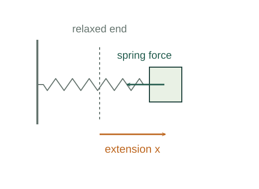
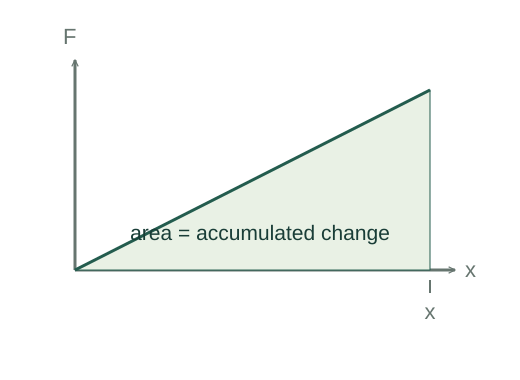

Why spring work contains ½kx²
An ideal spring does not exert a constant force. Its force grows linearly with displacement from equilibrium, so the work is an area under a sloping line rather than force at the endpoint times distance.
What the symbols mean
k > 0: spring constant (N/m); x: signed extension from equilibrium; Ws: work done by the spring.
When this applies
An ideal Hooke-law spring in its linear elastic range, with negligible internal losses.
Developing the argument

State the restoring-force model
The force points opposite the displacement. A positive extension gives a negative force along the x axis.
Accumulate the changing force
Work by the spring is the integral of its force component with respect to displacement. Keep the initial and final limits to preserve the sign.
Integrate the linear function
The integral of x is x²/2. Equivalently, the force–position graph between zero and x is a triangle of base x and height kx.

Define stored potential energy
For a conservative spring, energy stored increases by the negative of the work the spring does. Choose zero potential at the equilibrium length.
A closer lookWhy is conservative work minus a potential change? ↗Derive force from potential energyA worked example
Compressing a 200 N/m spring by 0.10 m stores 1.0 J. A quasistatic external push does +1.0 J while the spring does −1.0 J.
Derivation behind this calculation ↗A point to keep straight
The final force magnitude times displacement is kx², twice the actual work required from zero extension.
Check the assumptions and derivation ↗